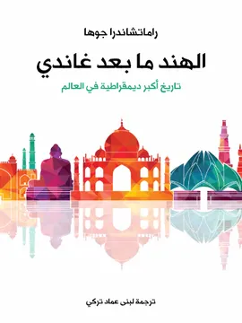

الهند ما بعد غاندي: تاريخ أكبر ديمقراطية في العالم

قراءة عربية أصلية محددة النطاق في الصفحات 21 إلى 26 من ملف PDF المرتبط، وليست تلخيصا كاملا للكتاب. نناقش ما تدعمه هذه المقاطع فقط.
ملحوظة الأسماء ومقدمة الطبعة الثانية للهند ما بعد غاندي
تشرح الملحوظة أن أسماء عدة مدن هندية عدلت في السنوات الأخيرة، فصارت بومباي مومباي ومدراس تشيناي. ويتبع الكتاب الاستخدام المعروف تاريخيًا، فيشير إلى عاصمة مهاراشترا باسم بومباي حتى يتغير اسمها رسميًا. ثم تبدأ مقدمة الطبعة الثانية بقول المؤلف إن الكتاب ليس فكرته. ففي نوفمبر عام ١٩٩٧ اتصل به ناشر بريطاني لم يسمع به من قبل بعد أن قرأ له مقالًا في دورية تاريخية، وأراد مقابلته في دلهي.
زاوية وحدود القراءة
قراءة موجزة من ص ٢١ إلى ص ٢٦ من أصل ١١١٠ صفحة، تعرض ملحوظة عن أسماء الأماكن ومطلع مقدمة الطبعة الثانية، لا الكتاب كاملًا.
الطبعة والقراءة
هذه الترجمة العربية صادرة ومتاحة مجانًا بموجب اتفاق قانوني بين مؤسسة هنداوي والمؤلف راماتشاندرا جوها، عناية روجرز، كولريدج آند وايت، ليمتد. حقوق الترجمة محفوظة لمؤسسة هنداوي.
تنزيل PDF المجاني ↓ القراءة والمصدر الرسمي ↗